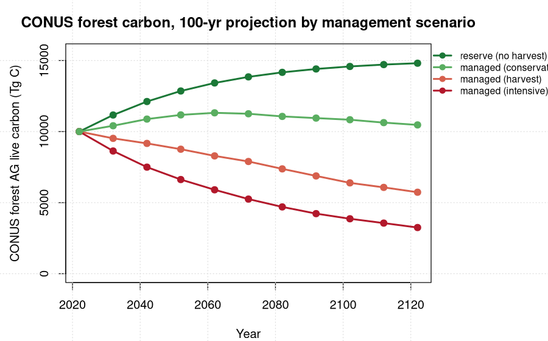

The empirical peak-decline yield curves are applied directly to TreeMap 2022 pixels and grown 100 years under four management scenarios, producing a spatially explicit CONUS aboveground live carbon trajectory that complements the uniform-grid yield-curve engine already in the explorer.
Each of the 65,043 TreeMap 2022 plot imputations (91.6% matched to FIA membership) carries its stand age forward on its forest-type x ecoregion x owner carbon curve, knocked down by an owner-specific harvest regime, and is expanded by its true 30 m pixel area. Summed to CONUS over 216.6 Mha, the no-harvest reserve scenario reproduces the established figure exactly (10,002 to 14,813 Tg C, +48%), which validates the spatial expansion. The three managed scenarios bracket it: conservation +5%, business-as-usual harvest -43%, intensive -68%. Standing live carbon only; removed carbon is off-stump, not a net atmospheric flux.

| Scenario | 2022 (Tg C) | 2122 (Tg C) | net change | cumulative removed (Tg C) |
|---|---|---|---|---|
| reserve (no harvest) | 10,002 | 14,813 | +4,811 (+48%) | 0 |
| managed (conservation) | 10,002 | 10,471 | +468 (+5%) | 5,658 |
| managed (harvest) | 10,002 | 5,734 | -4,268 (-43%) | 11,082 |
| managed (intensive) | 10,002 | 3,249 | -6,753 (-68%) | 14,084 |
TreeMap 2022 (USFS RDS-2025-0032) imputes one FIA plot (PLT_CN) to every 30 m forested pixel. The value attribute table gives, per imputation, the pixel count (hence area) and the imputed PLT_CN. Joining PLT_CN to the yield-curve engine's plot membership supplies stand age, forest-type group, ecoregion, owner, and state. Each imputation's aboveground carbon density is grown forward on its cell's peak-decline curve, b1 · age^b2 · b3^age, evaluated at five-year steps and reported at decade offsets.
The managed scenarios apply the same owner-specific harvest regimes the calendar-year state series uses: Industrial owners run an even-aged clearcut on a 45-year rotation; NIPF owners a 20-year partial entry removing 30%; State a 25-year, 25% partial; Public-Other a 30-year, 15% partial. The intensive scenario scales rotations to 0.7x and removals to 1.3x; the conservation scenario scales rotations to 1.6x and removals to 0.5x. Removed carbon is tracked as the cumulative harvest column above.
The explorer already carries the yield-curve engine as
yc_fia_empirical_v1, which expands per-acre densities with a
uniform-grid area model: area_ha = n_plots × A0, with A0 anchored so
state totals reproduce the FIA carbon anchors. The new
yc_treemap_spatial_v1 line instead expands by the actual
TreeMap pixel area attached to each imputation, so the state and CONUS
totals are spatially explicit rather than grid-uniform. The two lines agree
closely on reserve at the national scale and diverge where a state's real
spatial composition departs from its plot-count-weighted mean.
The reserve scenario is the validation anchor: the spatially explicit sum (10,002 to 14,813 Tg) matches the established uniform-grid CONUS no-harvest result to the reported figure, confirming the pixel-area expansion is consistent rather than introducing a new bias.
These trajectories are standing live aboveground carbon only. The cumulative-removed column is carbon taken off the stump, not a net atmospheric impact: it does not credit harvested wood products, product substitution, or soil and dead-wood pools. As a standing-stock comparison the ordering is exactly what the regime intensities imply (reserve > conservation > harvest > intensive), and it is internally consistent. A net carbon comparison across scenarios needs the fuller accounting before the managed declines are read as a net flux.
Select metric Above-ground live tree carbon in the explorer and
compare the four management buckets. The intensive and conservation buckets
are newly exposed; the yc_treemap_spatial_v1 line appears
alongside the existing yield-curve, FVS, CEM, and CBM engines for every
state and the CONUS rollup.
📊 PERSEUS explorer 🧮 TreeMap merge script
PERSEUS is the multi-model forest carbon intercomparison framework at the Center for Research on Sustainable Forests (CRSF), University of Maine. The projection ran on the Ohio Supercomputer Center Cardinal cluster (allocation PUOM0008). TreeMap 2022 is USFS RDS-2025-0032; carbon curves are fit from the FIA chronosequence over EPA Level 3 ecoregion x ownership strata.